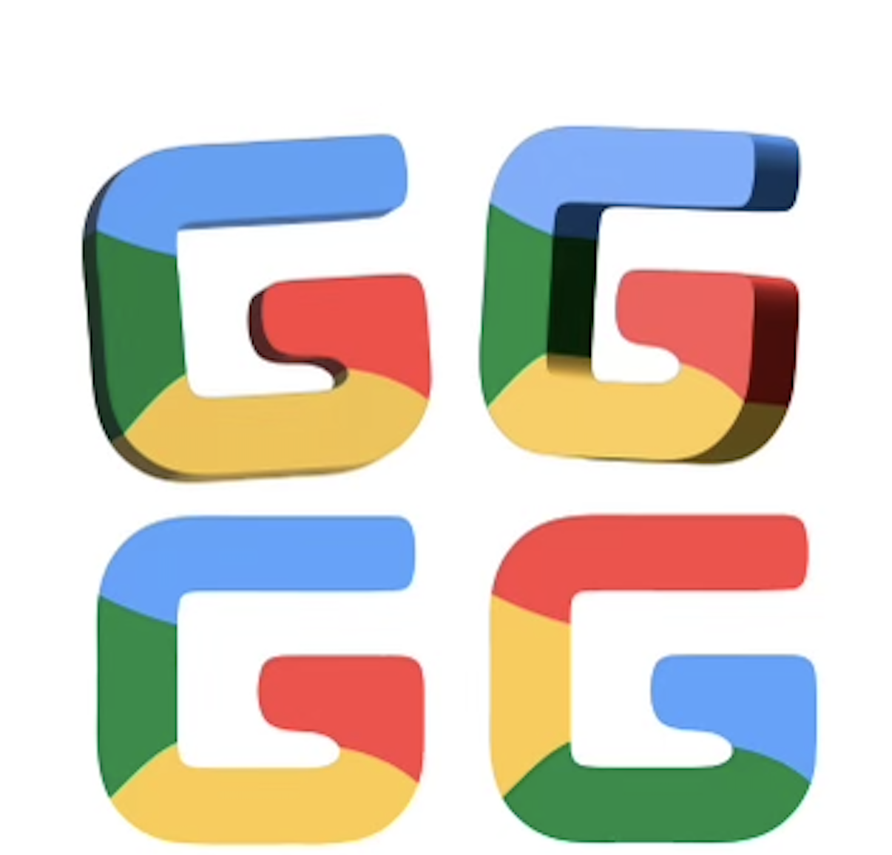
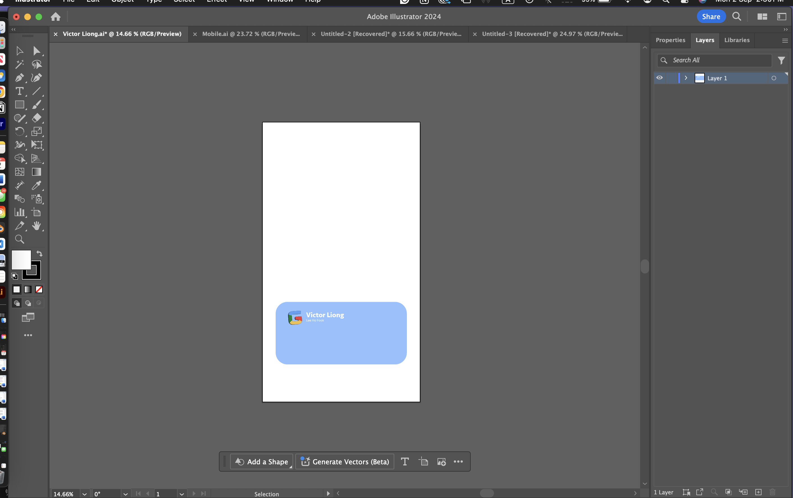
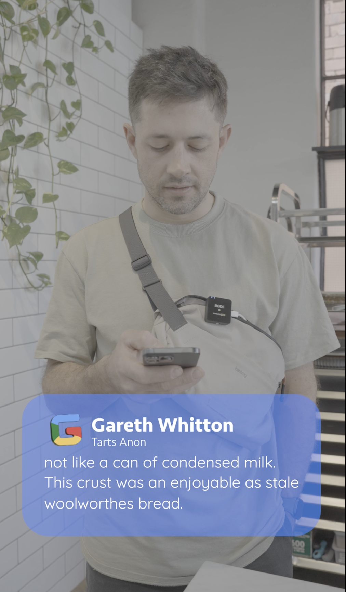

27th Day
Today I designed a google logo we can use in the meat reviews promo for the application launch date. I learnt that to not get copyrighted youy can't use certain logos in media so I had tp resign the google logo so people knew what it was but we didn't get in l;egal trouble. The google hue/hex colours are copyrighted so I had to change the colours I used slightly so they were different. I achieved and contribued a logo (top left) that by boss was happy with and got approved to be used in the promotional video.
28th Day
Today I focused on the design of the layout of the text box for the final mean tweets video. This included alot of redesign with colour,font and shape opacity. I learnt its important to test multiple different design to really see what works best.I achieved a layout that my boss approved of and contribued the illystrtaor file that will be used in future mean reviews videos that secondz will make in the future.
29th Day
Today I animated the typing text in the mean reviews video. This included listening to what they were saying and animationg it so it come up as they were saying certain words. I learnt how important it is to do things ion the right order. Especially making sure all the text was right (no spelling errors etc.) as if I chnaged it it changed the layout of the text and made me have to chnage the animation which slowed down my workflow. So doing every step carefully was an important lesson I learned. I ahieved the final video my boss was happy with and contributed to the final promotional video hich will be shown for the launch of the secondz app!